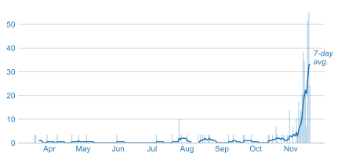
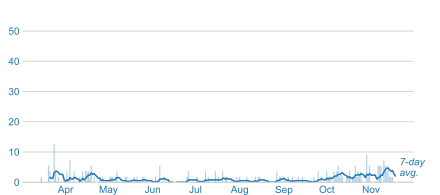
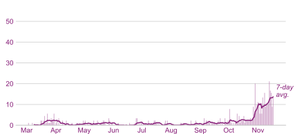
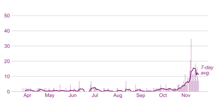

The Upper Connecticut River Valley
Covid-19 cases
Total
Deaths
Per 100,000 residents
Data source: The New York Times
Orange County, VT

Windsor County, VT

Grafton County, NH

Sullivan County , NH
